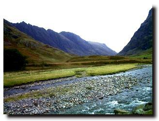

The Massacre of Glencoe
Text by Walter Scott
Tune - Mélodie
Sequenced by Ch.Souchon{kind=link}


|
ON THE MASSACRE OF GLENCOE
Oh! Tell me, Harper, wherefore flow Thy wayward notes of wail and woe Far down the desert of Glencoe, Where non may list their melody? Say, harp’st thou to the mist that fly, Or to the dun deer glancing by, Or to the eagle, that from high Screams chorus to thy minstrelsy? No, not to these, for they have rest, The mist-wreath has the mountain crest, The stag his lair, the erne her nest, Abode of lone security. But those for whom I pour the lay, Not wild wood deep, nor mountain grey, Not this deep dell that shrouds from day Could screen from treach’rous cruelty. The hand that mingled in the meal, At midnight drew the felon steel, And gave the host’s kind breast to feel, Meed for his hospitality. The friendly hearth which warm’d that hand, At midnight arm’d it with a brand That bade destruction’s flames expand Their red and fearful blazonry. Long have my harp’s best notes been gone, Few are its strings, and faint their tone, They can but sound in desert lone Their grey-hair’d master’s misery. Were each grey hair a minstrel string, Each chord should imprecations fling, ’Till startled Scotland loud should ring, “Revenge for blood and treachery!” Sir Walter Scott 1771-1882 |
SUR LE MASSACRE DE GLENCOE
1. O harpiste, à quoi bon ces vers, Ce deuil qui s'entête en ton chant? Il s'élève en Glencoe désert Où nul ne vient ouïr ses accents! Est-ce donc aux fuyants nuages Qu'il s'adresse, ou bien au cerf brun, Ou l'aigle dont les cris sauvages Mêlent à ton art leur refrain? 2. Non, car tous, ils ont leur repaire: Les cimes des monts aux nuées, Au cerf le gîte, à l'aigle l'aire Offrent des abris isolés. Mais ceux pour qui je me lamente, Ni fourrés n'ont pu, ni monts gris, Ni val profond, ni sombres pentes Les soustraire au lâche ennemi . 3. La main qui quêtait la pitance Dégainait à minuit l'épée En guise de reconnaissance, De prix de l'hospitalité. L'âtre où ces mains se réchauffèrent A minuit fournit les brandons Qui de la flamme meurtrière Répandaient horrible vision. 4. Sans ses cordes comment attendre De ma harpe un cri qui n'est plus? Seul un désert permet d'entendre Le râle du barde chenu. Ses cheveux gris se feront cordes Pour que sonne l'imprécation, Qu'étonnée notre Ecosse entonne: “Vengeons leur sang. Mort aux félons!”
(Trad. Ch.Souchon(c)2006)
|
DAS BLUTBAD VON GLENCOE
1. O Harfner, sprich, was bebt dein Sang Mit dumpfem, düstern Trauerklang Die Wildnis von Glencoe entlang, Wo ihn belauschen mag kein Ohr? Singst du den Nebeln auf der Flucht? Dem Schwarzwild, äugelnd von der Bucht? Singst du dem Aar, der aus der Schlucht Zu deinem Tonspiel kreischt den Chor? 2. Nicht ihnen, fern ja von Gefahr! Ihr Berghaupt hat die Nebelschar, Der Hirsch die Schlucht, sein Nest der Aar, Verstecke tiefer Sicherheit; Doch sie, um die mein Tonspiel klagt, Hat nicht der Fels, wie öd er ragt, Nicht Wald, noch Schlucht, wo nie es tagt, Geschirmt vor Falsch und Grausamkeit. 3. Die Hand, die zugelangt beim Mahl, Zog mitternachts den Mörderstahl Und gab zum Lohne Todesqual Dem Wirt für milde Gastlichkeit, Der Herd, der tags gewärmt die Hand, Bewehrte nachts sie mit dem Brand, Der, wild auflodernd, Deck' und Wand Der grausigen Vernichtung weiht'! 4. Mein bester Sang ist längst verhallt, Der Saiten Rest tönt matt und kalt, Erloschnen Blicks im Felsenspalt Wehklag' ich einsam früh und spät. Wär' jedes graue Haar ein Strang, Verwünschung spräche jeder Klang, Bis Schottland auferstünd' im Sang: "Rache für Blut und Missetat!" Übersetzt von G.Pertz für die Vertonung durch Ludwig van Beethoven (1770-1827) WoO.152 (25 Irische Lieder) n° 5 (1810/3) |